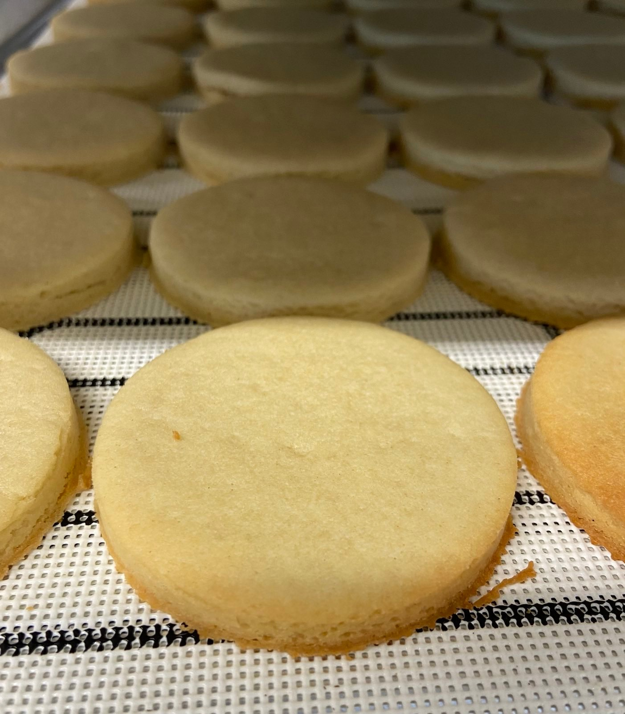

Description:
Above is what it should look like after baking
Ingredients for 1 batch of 105 cookies:
- 3 and 3/4 lb of salted butter
- 1 "scoop" of granulated sugar
- 1 "medium" cup of powdered sugar
- 8 eggs
- 5oz of imitation vanilla flavor
- 1 teaspoon of vanilla seeds
- 6 quarts of cookie flour
Steps:
- Assume the salted butter are frozen, microwave them for 4 minutes for 4 lbs
- Mix it well
- Add powdered and granulated sugar in and mix
- Add 8 eggs, vanilla flavor, vanilla seeds and mix
- Add the flour and mix
- The dough should now be ready. You can begin to put the frame on to make the cookies in whatever size you like!
- This amount of dough can make a bit more than 3 trays, where each tray has 35 cookies
- Put the dough into the freezer to harden it a bit
- Start baking
- Wait for the cookie to cool down before adding some paper towels on top to suck out the extra butter
- Enjoy!!
Return to top
Back to Homepage